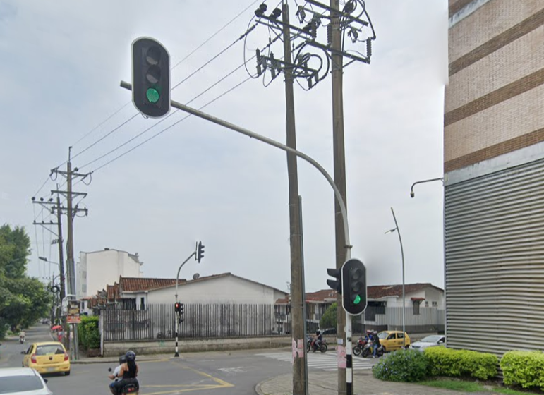

Semaforo Cerca del Centro Comercial Viva
El semáforo presentado a continuación fue objeto de una denuncia por parte de un ciudadano, quien expresó su preocupación por el avanzado deterioro que presenta.
En su observación, destacó que la estructura del semáforo muestra signos visibles de oxidación, una consecuencia atribuida a la falta de mantenimiento preventivo
y a la exposición constante a factores climáticos como la lluvia, la humedad y la luz solar directa. Este tipo de desgaste, además de afectar su aspecto físico,
puede llegar a comprometer su correcto funcionamiento, generando riesgos para la seguridad tanto de los peatones como de los conductores. La situación subraya la necesidad
de implementar revisiones periódicas en la infraestructura urbana para evitar posibles fallos y asegurar que continúe operando de manera eficiente y segura.
